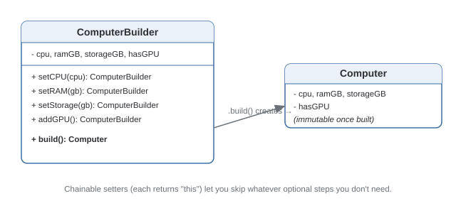

Builder Pattern
Separates the construction of a complex object from its representation, so the same construction process can build different configurations, step by step.
Theory
The problem, in plain terms
You need to construct a Computer that can have a CPU, RAM, storage, an optional GPU, optional cooler, optional RGB lighting, and so on. A constructor taking every combination either explodes into ten overloads, or one constructor with eight parameters where callers have to remember the order and pass null/false for the ones they don't want.
Builder pulls construction into its own object with named steps: .setCPU(...).setRAM(...).addGPU(...).build(). Each step is self-explanatory, optional steps are just steps you skip, and the object stays immutable and fully valid once .build() returns it.
How it's built
A Builder exposes chainable setter-style methods, each returning this so calls can be strung together — often called a "fluent" builder. A final .build() assembles everything into the actual product and returns it. For genuinely complex products, a Director can encapsulate common recipes — "build me a gaming PC" — while the Builder itself stays generic.
Keep the product immutable — the Builder tracks in-progress state, but the final object it hands back via .build() should expose no setters afterward.
Reaching for a Builder on a 2-field class. If there's no real optionality or validation between steps, a plain constructor communicates the same thing with far less code.
Where it bites you
It's another class (sometimes two, with a Director) to maintain for what might be a simple object. Builder pays off specifically when the parameter list is long, mostly optional, and readability/immutability actually matter — not by default.
Diagram

When to Use
- An object has many mostly-optional fields, and a constructor would need overloads or a long, error-prone parameter list.
- The object should be immutable once constructed.
- Naming common configurations (via a Director) is genuinely useful.
- The object has two or three fields with no optional combinations.
- Your language has named/default parameters and there's no real validation or ordering logic.
Real-World Examples
- Java's
StringBuilder— named after this pattern; chains.append()calls, produces the result via.toString(). - OkHttp's
Request.Builder— HTTP requests have many optional pieces (headers, body, timeouts) assembled fluently before.build(). - Lombok's
@Builder— generates a fluent builder class from a plain data class, because the pattern is common enough to warrant codegen. - Protocol Buffers' generated
Builderclasses — every message type gets a builder for constructing immutable message objects field by field. - Android's
AlertDialog.Builder— dialogs with many optional pieces (title, message, buttons, icon) assembled before.show().
Interview Questions
Click a question to reveal the answer.
Why not just give the constructor default parameter values instead of a Builder?
In languages with named/default parameters, that works fine for simple cases. Builder earns its place when there's real validation logic between steps, when the product must be genuinely immutable and never observable in a partially-built state, or when the number of optional fields makes even named parameters hard to read at the call site.
What's the role of a Director, and is it required?
The Director encapsulates common construction recipes — fixed sequences of builder calls, like "build a gaming PC." It's optional; many real-world fluent builders skip it entirely and let the caller call steps directly. Use a Director when the same configurations get built repeatedly and it's worth naming them.
How do you make the built object actually immutable?
The Builder itself is mutable — it's tracking in-progress state — but .build() should construct the final product's fields once, typically via a constructor taking the builder's accumulated values, and that product class should expose no setters afterward, only getters.
How does Builder differ from Factory Method for constructing complex objects?
Factory Method is about which class gets instantiated (polymorphism over types). Builder is about how a single, often complex, object gets assembled step by step. They can be combined — a factory could return different builders depending on context — but they solve different problems.
Code & Output
Same pattern, four languages. Every output shown here was captured from a real run.